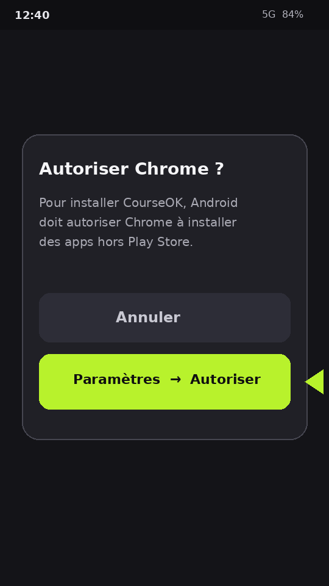
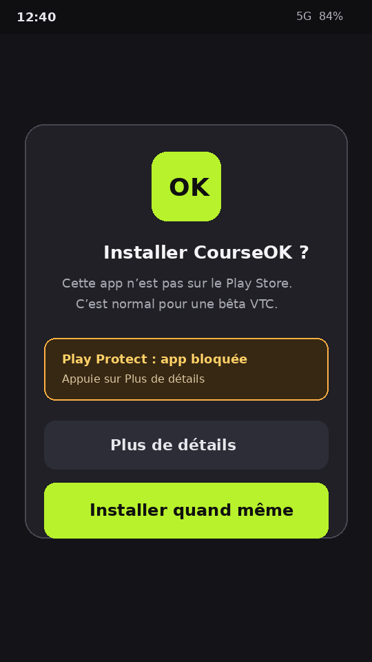

1
Télécharge puis ouvre le fichier
Appuie sur Télécharger l’app, puis ouvre CourseOK-….apk depuis les notifications ou Fichiers / Chrome.
Télécharger l’APKCourseOK n’est pas sur le Play Store. Android affiche donc « source inconnue » / Play Protect. Ce n’est pas un virus — tu dois juste autoriser une fois, puis appuyer sur Installer quand même.
Appuie sur Télécharger l’app, puis ouvre CourseOK-….apk depuis les notifications ou Fichiers / Chrome.
Télécharger l’APKAndroid demande : « Autoriser Chrome à installer des apps ? » Appuie sur Paramètres.
Bouton : Paramètres → Autoriser
Sur l’écran suivant, active le bouton (il devient vert / ON), puis reviens en arrière et rouvre le fichier .apk.
Bouton à activer : Autoriser depuis cette source
Play Protect peut afficher un avertissement. Ce n’est pas une erreur. Appuie sur Plus de détails si besoin, puis sur Installer quand même (bouton vert).
Bouton final : Installer quand même

Après l’install : ouvre CourseOK, puis active la lecture d’écran (guide Samsung / Xiaomi).